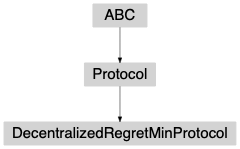

decentralizedregretminprotocol module¶
-
class
banditpylib.protocols.decentralizedregretminprotocol.DecentralizedRegretMinProtocol(pars)[source]¶ Bases:
banditpylib.protocols.utils.ProtocolDecentralized regret minimization protocol [FeraudAL18]
-
__init__(pars)[source]¶ - Parameters
pars (dict) –
{ # number of players "num_players": int, # When length is 1, "freq" will be used to record the intermedaite # regrets and plot the final figure. Otherwise, run each horizon in # "horizons" independently and use the regrets to plot the final # figure. "horizons": [int, ], # frequency to record intermediate regrets "freq": [int, ], # number of repetitions of the game "trials": int, # maximum number of processors can be used. -1 means trying # to make use all available cpus. "processors": int }
Warning
To ensure the independence between different horizons in the final figure, make sure
"horizons"is a list of two or more elements.
-
property
type¶ type of the protocol
- Type
str
-